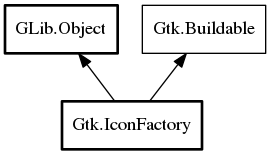

[ Deprecated ( since = "3.10" , replacement = "Gtk.IconTheme" ) ]
public class IconFactory : Object, Buildable
IconFactory
Object Hierarchy:
Description:
Warning: IconFactory is deprecated. Use Gtk.IconTheme.
Namespace: Gtk
Package: gtk+-3.0
Content:
Static methods:
Creation methods:
Methods:
Inherited Members:
All known members inherited from class GLib.Object

All known members inherited from interface Gtk.Buildable